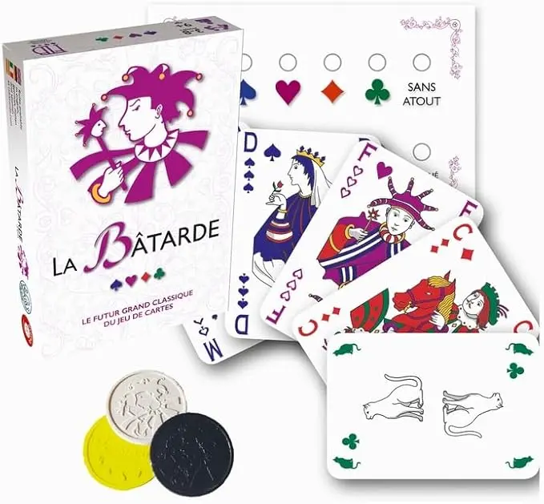

La nouvelle édition de la Bâtarde est sortie !
Distribuée par Wilson Jeux, elle est désormais disponible dans toutes les bonnes boutiques de jeux de France.
Acheter un jeuRegardez cette vidéo et assistez à la table finale du Grand Prix de Lyon de Bâtarde. Ingrid Gautier, Arthur Marconnier, le champion du monde Julien Grange et Frank "Perceval" Pitiot, le spécialiste du Cul de Chouette, se disputent la victoire. Découvrez la Bâtarde grâce à cette partie commentée par Marie Michellier et Alexandre de Roman.
Vous pouvez télécharger les règles du jeu dans différentes langues :